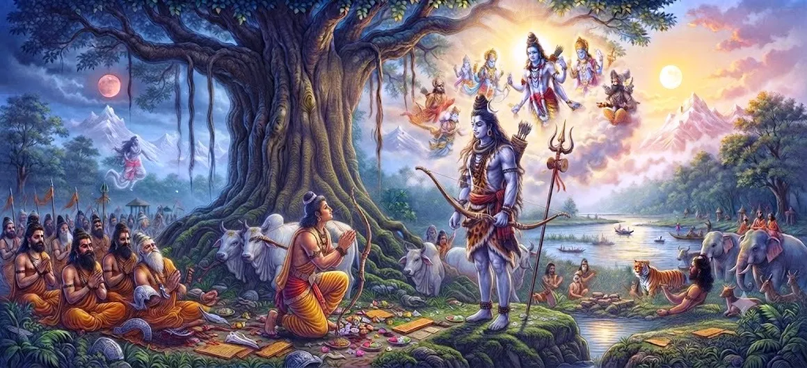

Lord Shiva's Incarnation as Kirata
Chapter 41 of the Shatarudra Samhita presents Lord Shiva's sacred incarnation as Kirata. Following the Kirata–Arjuna Dialogue, this chapter turns attention to the divine manifestation itself and the deeper meaning of Shiva appearing in the form of a hunter.
The Kirata form reveals an important spiritual principle: the Divine may appear through forms that do not immediately match human expectations. For the seeker, recognizing the deeper purpose of such a manifestation requires humility, discernment, and devotion.
The chapter therefore continues the sacred movement from Arjuna's encounter toward a fuller understanding of Shiva's divine presence and prepares the narrative for the teachings and manifestations that follow.
Chapter 41 Highlights
The Kirata Manifestation
The chapter centers on Lord Shiva's manifestation in the sacred Kirata form.
Shiva and Arjuna
The Kirata manifestation is closely connected with Shiva's divine encounter with Arjuna.
The Hunter Form
Shiva appears in a form that outwardly resembles a hunter, demonstrating the mystery of divine manifestation.
A Divine Test
The manifestation becomes part of a sacred test through which Arjuna's strength, humility, and discernment are revealed.
Hidden Divinity
The episode teaches that divine reality may remain concealed beneath an unexpected outward form.
Grace and Revelation
The Kirata incarnation points toward the deeper revelation of Shiva's presence and grace.
Core Topics in This Chapter
The Kirata Manifestation of Shiva
Chapter 41 turns the narrative toward the sacred manifestation of Lord Shiva as Kirata. The hunter form is not merely an external disguise, but a divine manifestation through which Shiva enters the unfolding episode surrounding Arjuna.
The Divine Hunter Form
The Kirata form carries a deliberate contrast between outward appearance and inner divinity. Shiva's manifestation reminds the seeker that the Divine is not confined to forms that the mind immediately expects.
Shiva's Connection with Arjuna
The Kirata manifestation is closely connected with Arjuna's spiritual journey. The encounter that began as a demanding challenge becomes a means through which the relationship between the devotee and the Divine takes deeper meaning.
The Sacred Test
Arjuna's discipline and courage are placed within a divine context. A genuine spiritual test is not simply about overcoming an opponent; it also reveals whether strength is accompanied by humility, clarity, and devotion.
The Hidden Divine Presence
The Kirata episode emphasizes that divine presence may remain hidden until the seeker is ready to recognize it. What appears ordinary can carry an extraordinary spiritual purpose.
Grace Through Divine Manifestation
Shiva's incarnation as Kirata points toward the compassionate mystery of divine grace. The Lord meets the seeker within the circumstances of the seeker, transforming an encounter into an opportunity for deeper realization.
Key Teachings of Chapter 41
Do Not Judge by Appearance
The Kirata manifestation reminds us that appearance does not reveal the complete nature of a person or situation.
Unite Strength with Humility
True strength remains balanced when courage is guided by humility and self-control.
Recognize Divine Tests
Difficult encounters can become opportunities for spiritual growth when approached with awareness and devotion.
Stay Receptive to Grace
Grace may appear through circumstances that initially seem ordinary or difficult.
Persevere in Discipline
Steady practice prepares the seeker to meet unexpected challenges without abandoning the spiritual path.
Seek the Deeper Truth
Spiritual wisdom grows when we learn to look beyond immediate impressions and seek the deeper reality.
Spiritual Reflection
The Kirata incarnation invites us to look beyond appearance. Shiva's manifestation as a hunter shows that divine presence cannot always be recognized through familiar symbols or expected forms. A sincere seeker therefore learns to remain humble, attentive, and receptive to the deeper meaning of every spiritual test.
Living the Message
When someone or something does not appear as you expected, pause before forming a judgment. The Kirata narrative encourages a deeper habit of observation and reflection.
In moments of difficulty, keep your discipline steady. A challenge can reveal qualities that ordinary circumstances do not bring to the surface.
Cultivate humility alongside confidence. Spiritual maturity means having the courage to act while remaining open to the possibility that there is more truth to discover.
Key Spiritual Concepts
The hunter form through which Lord Shiva manifests in the sacred narrative.
A manifested or embodied form through which the Divine becomes perceptible in sacred tradition.
Disciplined spiritual austerity and practice undertaken for purification and realization.
Discernment that helps distinguish deeper truth from outward appearance.
Devotion, love, and surrender directed toward the Divine.
Divine grace that supports the seeker's spiritual progress and realization.
Chapter Summary
Shatarudra Samhita Chapter 41 focuses on Lord Shiva's incarnation as Kirata. The chapter continues from the Kirata–Arjuna Dialogue and presents the hunter form as a meaningful divine manifestation rather than merely an outward disguise. Through this form, the narrative highlights the mystery of divine presence, the testing of the seeker, and the need for humility, discernment, courage, and devotion. The chapter concludes this stage of the sacred narrative while leading onward to The Twelve Jyotirlinga Incarnations.
Frequently Asked Questions
1. What is the main subject of Shatarudra Samhita Chapter 41?
Chapter 41 describes Lord Shiva's sacred incarnation as Kirata and develops the divine meaning of the Kirata manifestation.
2. What is the Kirata form of Shiva?
Kirata is the hunter form in which Lord Shiva manifests within the sacred narrative associated with Arjuna.
3. Why is Shiva's Kirata incarnation significant?
It demonstrates the mystery of divine manifestation and shows that the Divine may appear in an unexpected form while guiding and testing the seeker.
4. How does Chapter 41 follow Chapter 40?
Chapter 40 presents the Kirata–Arjuna Dialogue, while Chapter 41 focuses on Lord Shiva's incarnation as Kirata.
5. What spiritual lesson comes from the Kirata manifestation?
The episode teaches humility, discernment, perseverance, devotion, and the importance of looking beyond outward appearances.
6. What comes after Chapter 41?
The next chapter is The Twelve Jyotirlinga Incarnations.
“The Divine may appear in an unexpected form; wisdom begins when the seeker learns to look beyond appearance.”
Continue Through Shatarudra Samhita
Chapter 41 presents Lord Shiva's incarnation as Kirata and leads into the next account of The Twelve Jyotirlinga Incarnations.